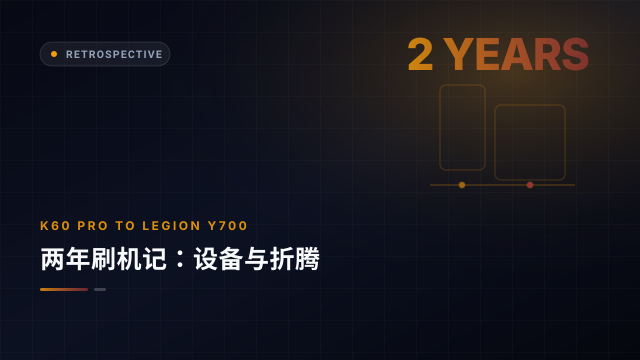

两年刷机记：从 K60 Pro 到拯救者 Y700 与假回锁
从最初使用现成的 Magisk 模块，到理解 Android 验证启动机制、设备自签名与双分区 OTA 维护，回顾两年间围绕多台高通设备展开的系统定制与排障历程。

最初入手 K60 Pro 时，我对刷机的理解还停留在“获取最高权限（Root）”。真正促使我动手的诉求很具体：希望绕过原厂系统的默认限制，对后台调度、全局刷新率等系统级行为做更细致的定制。
第一道门槛是解锁 Bootloader（系统引导加载程序）。2025 年起小米大幅收紧了解锁策略：账号需先将官方社区等级升至 5 级，再通过不定期开放的资格答题；答题成绩每周一晚清零，获批后须在 14 天内完成设备绑定与解锁，且每个账号每年仅限解锁一台设备。光是摸清这套准入规则，就花了不少时间。
成功解锁后，最初只是照搬现成的 Magisk（主流无侵入式 Root 框架）模块。直到经历了几次卡开机与功能失效，才倒逼自己去查清背后的机制：为什么 Magisk 不直接改动只读的 system 分区也能挂载生效，为什么新机型的补丁必须写入 init_boot 引导分区，以及修改镜像后为何必须重新处理校验签名。
那段时间硬盘里留下了十份修补镜像，时间从 2025 年 10 月排到 2026 年 3 月，基本跟着系统版本迭代。
Y700：从「免解玄学」到「自签设备」
购入联想拯救者 Y700 四代平板时，初衷只是看中 8.8 英寸屏幕适合阅读，原本打算直接维持原厂系统使用。
转折源于社区流传出的一份无需解锁 Bootloader 即可刷入的工程固件包。它利用高通平台的 9008 紧急下载模式（EDL）直接读写闪存芯片——这是固化在芯片底层的烧录与救砖通道，不依赖上层系统。第一次操作时，面对设备管理器里的底层端口列表，我反复核对了许久才敢执行写入。
后来梳理 Android 启动校验机制才弄清原理：这并非底层漏洞，而是因为该机型属于“可自签设备”——厂商在出厂引导链中保留了对 Android 开源项目默认测试密钥（AOSP testkey）的信任。只要使用这套公开私钥对修改后的分区重新签名，未解锁的原厂引导程序也会将其视为合法固件放行。
从按部就班照搬教程，到能够独立判断目标分区结构、区分“常规解锁”与“密钥自签名”的边界，背后花了不少时间补齐启动链知识。
假回锁与 A/B 槽位的生存战
后来接触到部分完全关闭官方解锁通道的高通机型，定制思路又发生了变化。
这类设备既无法常规解锁，也不信任公开测试密钥，社区由此衍生出 “假回锁（Fake Lock）” 方案：利用底层引导漏洞，在次级引导程序（ABL）运行的极早期注入内存补丁，将引导锁状态改写为正常的“已锁定（Locked & Green）”，使后续启动的系统与硬件可信执行环境（TEE）均认定设备处于原厂未改动状态，同时正常加载修补后的内核。
这种方案最脆弱的环节在于系统在线更新（OTA）。采用 A/B 主备双分区的机型在后台下载更新后，会将原厂未修改的引导程序与内核写入备用分区；一旦直接重启切换分区，原有的引导补丁会被覆盖，极易因校验冲突导致无法开机。因此每次系统更新写入完成后都不能立即重启，必须先用专用引导维护工具与内核管理器（如 KernelSU）分别为备用分区补齐引导补丁和内核权限，确认无误后才能切换分区。
从用工具到做工具
熟悉底层机制后，我开始尝试自己编写模块和辅助脚本来解决实际痛点。
第一个目标是解决动态刷新率频繁降档的问题：阅读静态文字时，屏幕常自动降至 60Hz 甚至更低，滑动初段会有明显顿挫。我编写了一个锁定全局 120Hz 的模块，从三层同时介入：修改系统显示设置参数、改写内核暴露的 sysfs 显示控制节点，并屏蔽系统框架层的温控降帧策略。调试中最耗精力的并非参数本身，而是启动时序——系统服务初始化往往会覆盖早期写入的配置，最终需要在脚本中轮询等待系统启动就绪后，再二次写入锁定。
后来又整理出一份 AVB 签名脚本，把提取分区、重算哈希、重签 vbmeta、刷回和上锁串成一条自动化流程。
再往后是对系统环境一致性的体会：系统属性看似可以随意覆写，但直接改动全局属性，往往会导致上层应用框架与底层原生（Native）驱动读取到的硬件信息不一致，进而引发跨层调用异常。摸清这层边界后才意识到，与其堆砌各类全局修改模块，不如尽量维持系统的原生状态，仅在目标作用范围内做最小化调整。
现在
两年下来，从最初照搬教程刷入现成工具，到能够独立分析分区结构、编写定制模块、理清文件系统挂载与硬件安全校验的边界，中间并没有哪一步是凭空顿悟的，全靠一次次卡开机与异常报错倒逼着把链路摸清。
如今硬盘里还存着 350 GB 的固件包与排查记录，绝大多数大概不会再派上用场，但它们完整记下了把这套底层机制逐层理顺的过程。